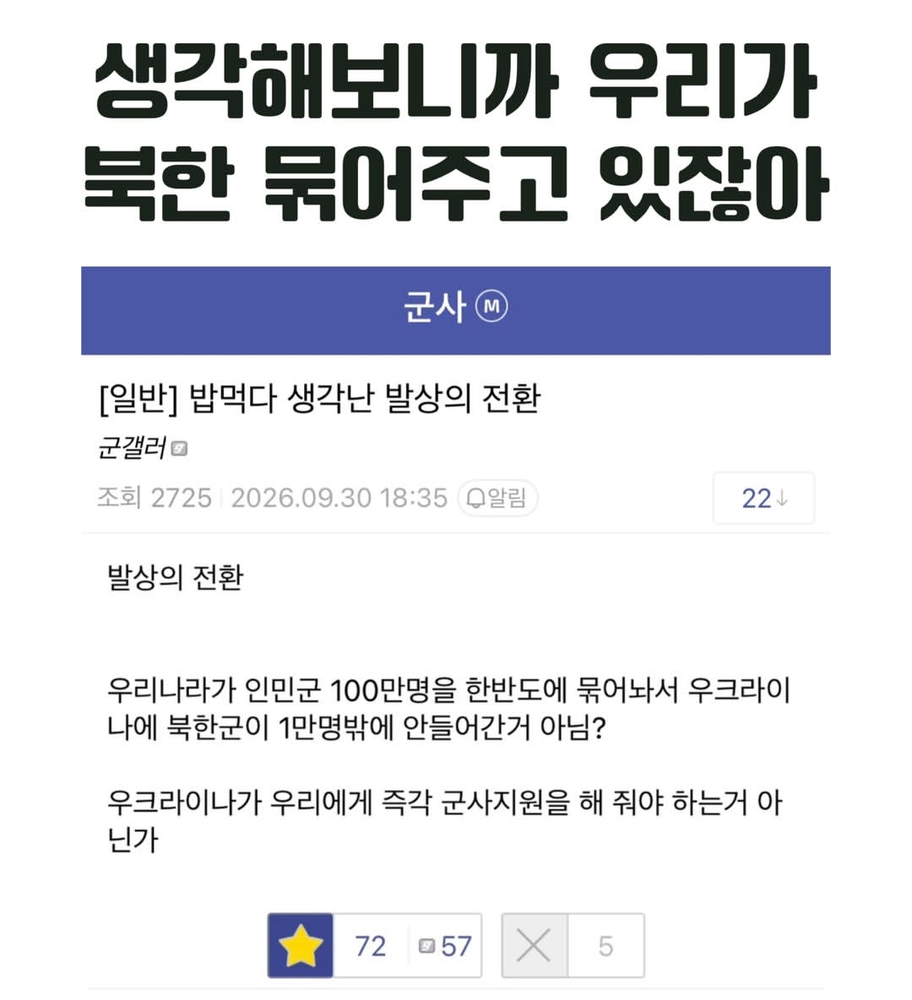

발상의 전환.jpg
댓글
맞네 우크라이나 맘들 우크라니아 욕하면
러시아가 북한돈준다고 지랄하던데 그거랑 우크라이나가 한국에 깽판치는거랑 뭔상관인지 모르겠지만
저런 신박한 논리가있었군
에초에 개소리니깐 똑같이 반박해줘야겠네
군갤 할려면 밥먹다가도 저런 생각이 나와야 하는구나 ㅋㅋㅋ
이게 맞다
솔직히 전쟁억제 명목으로 꺼드럭댈 수 있으면 한국이 뭐든 ㅈㄴ많이 받아야함
전교6등이고 반에서6등인데 한국이 알박기로 막은 전쟁만 서너차대전쯤 될듯 ㅋㅋ

원조해줘도 싸가지없고 전쟁도 안 끝나는데 발상의 전환으로 러시아를 원조하면 안됨?
군갤에는 제갈량이 있는가


오...
100만 뿐 아니라 우리 없었으면 곡산포에 600mm 방사포까지 다 들어갔다.